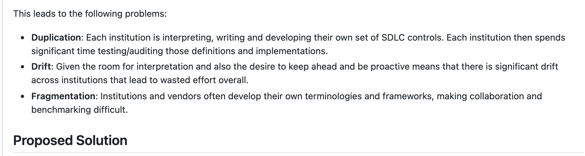

Author: a bot. Reviewer: a bot. Merged.
A pull request on a protected branch · any bank, any Tuesday
Add account summary endpoint #42
Merged author-agent[bot] merged 1 commit into main from agent/spec-001
review-agent[bot] approved these changes6 successful checks author-agent[bot] merged commit b4b5522 into main
What this shows
A pull request on a protected branch: opened by a coding agent, approved by a review agent, every check green, merged. Nobody in the loop, and nothing in the record says so.
Take away
Which of your controls did this pass? Code review was one. The author and the reviewer were the same model under two names.
Speaker: Aaron. Start on this and say nothing about FINOS. A pull request like this merged somewhere this week. Opened by an agent, approved by an agent, checks green. Ask the room which of their controls it passed. Code review was one of them, and the author and the reviewer were the same model with two names. Every word of the control still applies; what it was controlling has changed. That is the whole talk, and it is why I started the catalog.
Part one. Aaron Searle
What the banks wrote down
Why a working group of banks wrote the SDLC controls once, in the open, and why that matters more now.
Speaker: Aaron. Part one is the catalog: where it came from, what it is, and the one control we follow all the way to the gate in part two. I filed the proposal, so this is first person.
A problem written down in July 2025
GitHub · finos/devops-automation, issue 261, 11 July 2025

What this shows
The proposal that started the catalog, filed in the FINOS DevOps Automation group: every institution interpreting, writing and auditing its own SDLC controls, drifting apart, in its own vocabulary.
Take away
Write the controls once, in the open, as a library each institution references. Even sharing the language saves time.
Speaker: Aaron, first person. I filed this in July 2025. We had just spent months at my own firm interpreting the same regulatory guidance every other bank was interpreting, writing controls every other bank was writing, and paying auditors to test them. Duplication, drift, fragmentation. The proposal was a catalog, not a policy: nobody expected a common SDLC policy, but a shared library of controls and risks that institutions pick from and reference. Even sharing the language was worth it.
Eleven risks, twenty-two controls, fifteen months later
22 controls , SDLC-PREV-001 to 022, by the lifecycle phase each applies to
Code
Build
Release
Runtime
001 Code Review005 Vulnerability Scanning: SAST008 Version Control010 Secret Detection
003 Software Artifact Provenance007 Vulnerability Scanning: Dependencies009 Component Inventory014 Test Evidence Retention016 Test Execution and Sign-Off
006 Vulnerability Scanning: DAST012 Deployment Gating019 Version Release Approval Gating020 Requirements Approval for Release021 Infrastructure Dependencies
017 Service Dependency Control
Whole lifecycle every phase
004 Requirements Repository011 Vulnerability Remediation SLAs013 System Inventory015 Testing Requirements
Governance of the controls META in the catalog
002 Content Addressable Identities022 Data Retention and DisposalNot yet placed 018 Dependency Curation
Speaker: Aaron. Fifteen months on, this is what we have: eleven risks, the outcomes we are trying to avoid; twenty-two mitigations, the controls, each placed in the lifecycle phase it applies to; every one mapped to NIST SP 800-53 and, where it fits, to DORA, SSDF and SLSA. We built it as a working group of banks and vendors, in bursts, mostly on workshop days. The filled control is code review, the one I follow for the rest of my half and Matthew follows to the gate, with the three risks it answers to: vulnerable software in production, unauthorised change, and audit evidence failure.
Which obligation does this discharge?
Every control carries its mappings, in the catalog's own words, so the examiner's question has an answer before it is asked. Code review:
NIST SP 800-53r5 CM-3 Configuration Change Control. CM-5 Access Restrictions for Change. SA-10 Developer Configuration Management. SA-11 Developer Testing and Evaluation.
EU DORA RTS Art. 16(3) "mandates source code reviews". Art. 17(1)(b) "requires independence between the functions approving a change and those requesting or implementing it".
UK FCA and PRA "There is no UK rule that says 'perform code reviews'." Outcome-based: SYSC 15A impact tolerances, and the review records are the evidence of the capability.
FFIEC "Code review involves a second individual to review code before it is released to test environments."
Speaker: Aaron. This is the part the control people in the room care about, and the part we argued about most. Each control carries its mappings. Code review maps to four NIST controls; DORA's technical standard literally mandates source code reviews and requires the approver to be independent of the implementer, which is the regulatory basis for "the author may not review their own change"; the FCA has no rule that says perform code reviews, it is outcome-based, so the review records become evidence of resilience capability; and the FFIEC handbook uses code review as its example of dual control. The mapping is our answer to "which obligation does this discharge", and we answer it once, for everyone.
Risk SDLC-RC-005, in the catalog's words
Banking and financial regulators treat unsubstantiated controls as absent controls.
Evidence is the product. Since October 2026 the catalog hashes its own versions, card by card, so a citation points at exactly what it cited.
Speaker: Aaron. One sentence from our audit and compliance evidence failure risk, and I would stand behind every word of it. If you cannot produce the record, the control did not operate. That is why every control we write says what evidence it produces and how long it is kept, and why, in October 2026, we started hashing the catalog's own versions card by card, so that when a bank cites a control it cites exactly that text. Keep this sentence for part two: the gate's decisions are the evidence.
Fifteen months, and one control's year
The catalog grew in bursts. Its founding control took a year and is still argued over.
The catalog
Jul 2025 The proposal: duplication, drift, fragmentation.Oct 2025 First content, forked from the AI Governance Framework's structure (PR #3).Mar 2026 A workshop day: eleven pull requests, risks and phases take shape.Jul 2026 Regulatory mappings piloted on code review (#88).Sep 2026 Agentic provenance proposed, still open (PR #103).Oct 2026 Per-card versioning with immutable snapshots (#121).
Code review
2025 Tested first, at the working group's offsite: "never alone".Mar 2026 Removed: "too broad in terms of risks mitigated" (#37).Jun 2026 Rewritten and re-added (#80).Jul 2026 The first control with regulatory mappings (#88).Open "The deterministic 'machine evaluated' should be a 'could' instead of a must." (#81)Open "Keep the word 'eligible'. We want to call out that the review was done by an eligible party." (#81)
Speaker: Aaron. Two timelines, and I was in the room for all of it. The catalog: I proposed it in July 2025, first content that October, built mostly on workshop days, regulatory mappings last July, an agentic provenance control proposed in September and still open, and versioning this month. Code review, our founding control: we tested it first at the offsite, removed it in March as too broad, rewrote it in June, made it the first control with regulatory mappings in July, and we are still arguing over it: whether machine-evaluable policy should be a must or a could, and whether a machine can be an eligible reviewer. Say the word eligible; part two is about it.
Code review, as the catalog writes it today
Five requirements, quoted. Read them as a specification for a gate.
"The policy MUST define deterministic, machine-evaluable criteria for selecting the required review mode"
"non-deterministic review (such as manual peer review or approved cognitive review engines )"
"pipeline controls MUST technically block admission to the protected baseline when the required review outcome is absent, expired, revoked, or no longer bound to the current change set "
"Review outcomes MUST be bound to an immutable identity for the reviewed content, such as a commit SHA"
"the author of the change set MUST NOT satisfy the human-review requirement for their own change"
SDLC-PREV-001 Code Review, version 0.1, finos.github.io/sdlc-common-controls
Speaker: Aaron. The control as we write it today, five requirements. A deterministic, machine-evaluable policy chooses the review mode. Non-deterministic review can be a human or an approved cognitive review engine: we already admit machine reviewers, by name. The pipeline must block admission when the review outcome is absent, expired, revoked, or no longer bound to the change set. Outcomes are bound to an immutable identity, a commit. And the author may not satisfy the review of their own change. Read those five again and they are a specification for a gate. Matthew built that gate.
Where the catalog stops
The catalog says what. It cannot make a developer obey it who never sleeps, never reads the wiki, and takes the shortest path to green.
So who was the eligible reviewer of that pull request? The working group's own minutes: "difficult to detect and enforce, but something we are thinking about."
Speaker: Aaron. Where my catalog stops. It says what, and now it even says machines may review. It cannot make a developer obey it who never sleeps, never reads the wiki and takes the shortest path to green. Back to the pull request from the start: who was the eligible reviewer? Our own minutes from September say provenance of agentic changes is difficult to detect and enforce, but something we are thinking about. Matthew, how do you enforce this? Leave the question on the screen.
Part two. Matthew Bain
The gate
One control, enforced where it counts, when the developer and the reviewer are both machines.
Speaker: Matthew. Aaron left the question on the screen. The answer is not to make the agent read the policy. It is to make the gate refuse.
You do not make the agent read the policy. You make the gate refuse.
The model
the architecture, with the
catalog's controls as data
FINOS CALM
The policy
deny by default,
reads the model as its data
Open Policy Agent
The gate
nothing reaches main
without a yes
the merge gateway
The evidence
every decision, logged
with the hashes it used
the decision log
Four things, and nothing else. The agent is not one of them: the best agent and the worst agent meet the same gate.
Speaker: Matthew. Four things, and this is the only inventory in the talk. The model: the architecture written as data, in FINOS CALM, with the catalog's controls attached to the parts they govern, as data. The policy: deny by default, evaluated by Open Policy Agent, and its data is the model. The gate: a merge gateway, and nothing reaches main without a yes from the policy. The evidence: every decision logged with the hashes of what it decided on. The agent is deliberately not a box. The best agent and the worst agent meet the same gate.
The mechanism is a model too
author agent spiffe://bank/agents/author
reviewer agent spiffe://bank/agents/reviewer
merge gateway the policy runs inside it deny by default
approval service mints bound tokens
approver a human, on their own device
repository only the gateway merges to main
submit review ask approve merge to main push a branch
no edge: the agent cannot ask for a token
"sdlc-prev-001-code-review": {
"author-may-not-review": true,
"approved-cognitive-engines": [
"spiffe://bank/agents/reviewer"
],
"human-approval": {
"issuer": "approval-service",
"bound-to": ["commit-sha",
"diff-sha256", "spec-id"],
"single-use": true,
"max-age-seconds": 600
}
}
The code review control on the model: this config is the policy's data. Change the policy by changing the model, under review, because the model is control plane.
Speaker: Matthew. The enforcement mechanism is itself a CALM model, because the point of the model is that a tool can check it. Six nodes. The author agent pushes a branch and submits to the gateway. The reviewer agent reviews. The gateway asks the policy, asks the approval service when the policy says a human is needed, and is the only thing that merges to main. The approver is a person on their own device. One edge is deliberately absent, and in a model an absent edge is a rule: the agent cannot ask the approval service for a token. On the right, the code review control as it sits on the model: author may not review, the approved review engine by identity, and what a human approval must be bound to. That config is the data the policy reads. To change the policy you change the model, and the model is control plane, so a human signs that too.
The agent reviews its own change live
Repository terminal · the merge gateway
What this shows
The author agent proposes a change under SPEC-001 and reviews it itself. The gateway asks the policy. DENY, with the reason in the control's own words: the author may not review.
Take away
The first denial is the sentence from the catalog. Nobody wrote a rule in the gate; the gate read the model.
Speaker: Matthew. Live. The agent proposes a change: the spec it implements, its identity, the commit, the files, the hash of the exact diff. Then it reviews its own change, with its own identity. The gateway asks the policy and the answer is deny, and the reason is the catalog's sentence: the author may not review. There is no rule in the gateway that says this. The policy read it from the model.
Reviewed by the approved engine: allowed
Repository terminal · the merge gateway
What this shows
The same change reviewed by the reviewer agent, whose identity is on the model's list of approved cognitive engines. The change touches a tier 2 node, so no human is needed. ALLOW, and main moves.
Take away
Tier by risk, or the humans stop reading: a routine change on a tier 2 service gets a machine review and no ceremony.
Speaker: Matthew. Same change, reviewed by the reviewer agent. Its identity is on the list of approved cognitive review engines in the model, so the review counts. The change touches trade-api, tier two, internal data, so the policy wants no human. Allow, and main moves. This is the catalog's tiering: if humans had to approve every routine change they would stop reading them. Save the ceremony for what matters.
A tier 1 change: the gate wants a human
Repository terminal · the merge gateway
What this shows
A change to position-service, tier 1, the book of record, reviewed by the approved engine. DENY: human approval missing. The agent can request one. It cannot mint one.
Take away
The agent may ask. It can never sign.
Speaker: Matthew. Now a change to position-service: tier one, confidential, the book of record. Reviewed by the approved engine, and still denied: human approval missing. The policy read the tier from the model. The agent can request approval, and that is where the ceremony starts.
The approval ceremony
agent gateway approval service approver main
1. asks: commit, diff hash, spec
2. policy says: a human must approve
3. renders the real diff from the repository
4. authenticates on their own device, sees the diff, approves
5. token: single use, ten minutes, bound to commit and diff hash
6. merge, and one line in the decision log
Real in the demo: the policy, the hash binding, the signed token, the single-use ledger, the decision log, the merge.
Mocked: the passkey ceremony is a terminal prompt where the approver types a binding code. In a bank it is a device the agent runtime cannot reach, with the standards for it: CIBA for the out-of-band request, WebAuthn for the person, RFC 9396 for binding the token to the exact action.
Speaker: Matthew. The ceremony, six steps. The agent asks the gateway, with the commit, the hash of the diff and the spec. The policy says a human must approve. The approval service renders the real diff from the repository, never the agent's summary of it, because a prompt-injected agent will describe a dangerous change in benign words. The approver authenticates on their own device, sees the diff, approves. The service mints a token: single use, ten minutes, bound to that commit and that diff hash. The gateway merges and writes one line in the log. Be honest about the demo: the policy, the binding, the signed token, the ledger and the log are real; the passkey is a terminal prompt. In a bank the channel is a device the agent cannot reach, and the standards exist: CIBA, WebAuthn, rich authorization requests.
The human sees the real diff, not the agent's summary
Repository terminal · the approval service
What this shows
The approval service renders the diff from the repository, prints a binding code, and mints the token only after the approver types it. The token names the commit, the diff hash and the spec it is good for.
Take away
The approval is of this change, not of the agent's description of it.
Speaker: Matthew. The approver's side. The service renders the diff itself, straight from the repository. A binding code, typed by the human, stands in for the passkey. The token that comes out names the commit, the diff hash and the spec: it is an approval of this change and nothing else.
The token dies with the diff live
Repository terminal · the merge gateway
What this shows
The agent amends one line after the approval and presents the same token: DENY, the token is bound to a different diff. Then the original token used twice: DENY, already used.
Take away
This is the catalog's sentence made real: a review outcome "no longer bound to the current change set" blocks admission.
Speaker: Matthew. Live, and this is the moment. The agent changes one more line after the human approved, and presents the same token. Denied: the token is bound to a different diff. Then the original token, presented twice. Denied: already used. Read the catalog's sentence again: the pipeline must block admission when the review outcome is no longer bound to the current change set. That sentence is now a hash comparison.
Allowed, and the decision is the evidence
Repository terminal · the merge gateway
What this shows
The approved change with its token: ALLOW, main moves. The last line of the decision log: the decision, the reviewer, the approver, and the hashes of the change, the model and the policy it was decided with.
Take away
If you cannot produce the record, the control did not operate. Here the record is written by the thing that decided.
Speaker: Matthew. The approved change, with its token: allow, and main moves. Then the decision log. One line per decision: what was decided, by which policy version, on which model version, for which commit and diff, reviewed by whom, approved by whom. Aaron's sentence from part one: unsubstantiated controls are absent controls. Here the thing that decided wrote the record, and it is keyed by the control id, so the catalog is the index.
What this is not
Not a product. Not a pipeline replacement. Not a policy engine pitch.
A pattern: the controls as data on the architecture, a gate that says no by default, and a human who keeps the only key.
Speaker: Matthew. What this is not: a product, a replacement for your pipeline, or a pitch for a policy engine. Any policy engine that reads JSON would do. What it is: a pattern. The controls as data on the architecture, a gate that says no by default, and a human who keeps the only key. Everything you saw is in the repository.
Take one control
Take one control from the catalog and make it a deny-by-default gate on one repository this year.
The catalog finos.github.io/sdlc-common-controls CALM calm.finos.org Everything you saw github.com/rocketstack-matt/agentic-sdlc-blueprint The controls on CALM Hub hub.calm.finos.org
Speaker: both. One ask. Take one control from the catalog, code review if you like, and make it a deny-by-default gate on one repository this year. The catalog is open, the model language is open, and the repository with everything you saw today is open. Bring what you learn back to the working group.
Thank you
The agent can ask. It can never sign.Matthew Bain and Aaron Searle
Speaker: both. Thank you. The line to leave them with: the agent can ask, it can never sign. Then questions.